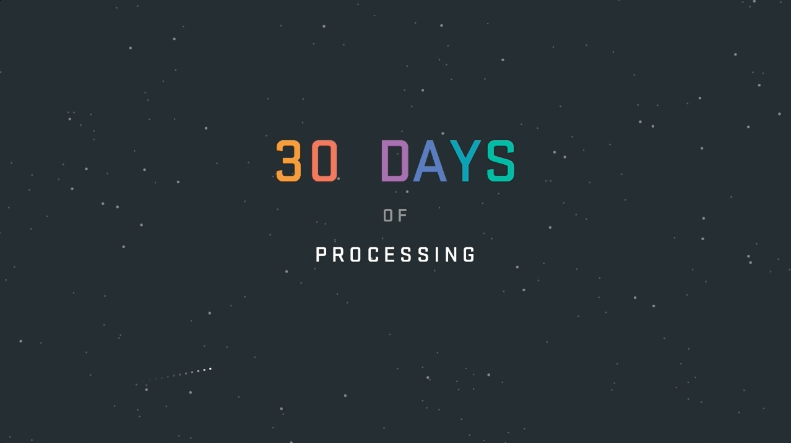

30 Days of Processing,
Motion Graphics, Creative Coding
A collection of animations or illustrations made with Processing. The Parsons Major Studio I requires us to fabricate 5 projects in 5 days. While completing this project, I want to extend the context to make 30 daily projects in total. The theme of these applets are largely about nature and physics, inspired by Daniel Shiffman's The Nature of Code.
